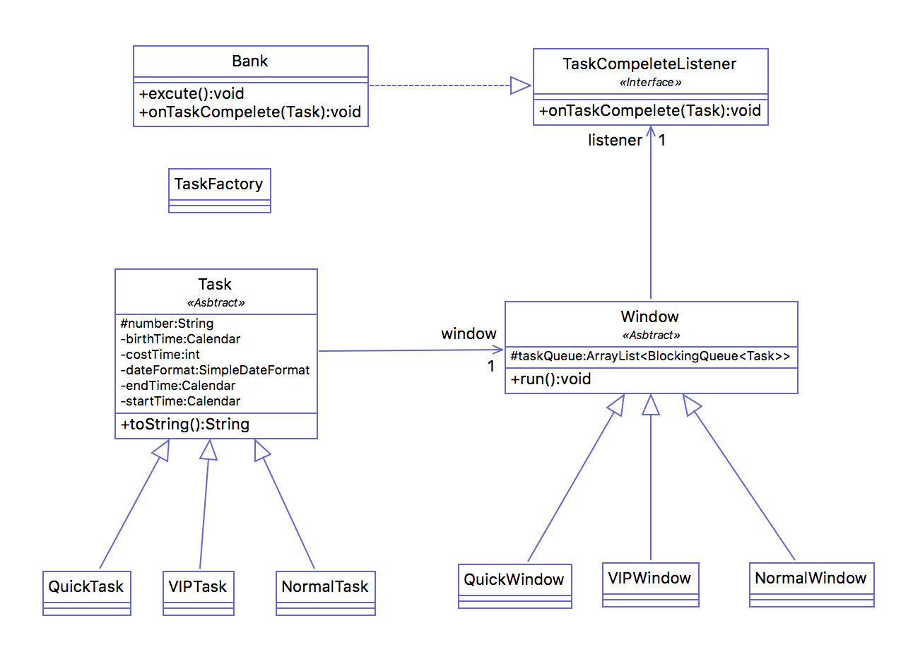
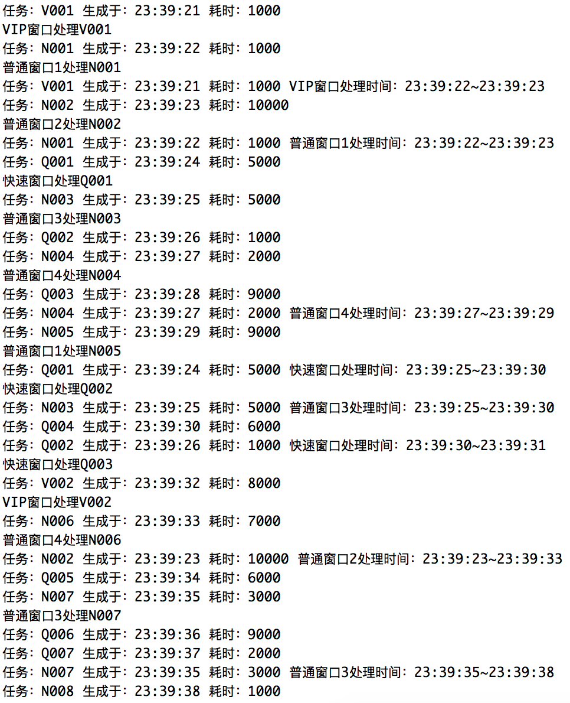

前不久看到一个题目模拟银行柜台处理业务觉得很有意思，模拟银行柜台处理业务，考察的多线程编程，以及多线程间通信。由于以前没有系统学习过Java，工作中也是根据实际需要，去选择Java的一个部分再次学习。所以多线程编程一直是自己的软肋。甚至分不清实现Runnable接口和继承Thread类的区别。顺便问一下有人知道实现多线程编程的第三种方式么？在处理这个问题之前，先看了一遍《疯狂Java讲义》（这本书用来Java编程入门足以）中关于多线程的章节，心中关于题目中实现线程间通信也有了几种不同的方案，这里根据实际需要选择最容易实现的一种。
题目
(1) 银行内有6个业务窗口，1 - 4号窗口为普通窗口，5号窗口为快速窗口，6号窗口为VIP窗口。
(2)有三种对应类型的客户：VIP客户，普通客户，快速客户（办理如交水电费、电话费之类业务的客户）。
(3)异步随机生成各种类型的客户，生成各类型用户的概率比例为：VIP客户 ：普通客户 ：快速客户 = 1 ：6 ：3。
(4)客户办理业务所需时间有最大值和最小值，在该范围内随机设定每个VIP客户以及普通客户办理业务所需的时间，
快速客户办理业务所需时间为最小值（提示：办理业务的过程可通过线程Sleep的方式模拟）。
(5)各类型客户在其对应窗口按顺序依次办理业务。
(6)当VIP（6号）窗口和快速业务（5号）窗口没有客户等待办理业务的时
候，这两个窗口可以处理普通客户的业务，而一旦有对应的客户等待办理业务的时候，则优先处理对应客户的业务。
(7)随机生成客户时间间隔以及业务办理时间最大值和最小值自定，可以设置。
分析
- 题目涉及到的两个对象：窗口，业务。
- 根据窗口处理的任务分为：普通窗口、VIP窗口、快速窗口。
- 根据业务类型分为：普通业务、VIP业务、快速业务。
- 不同的窗口分为独立的线程处理不同的业务。
- 设定一个线程模拟生成业务。
- 业务对象有以下属性：
a. 编号——取号操作
b. 耗时 ——这里在生成业务时候生成
c. 业务生成时间
d. 业务开始处理时间
e. 业务结束处理时间
f. 业务被处理的窗口
实现
UML图

-
Bank类实现TaskCompeleteLitener接口，Windows窗口类引用TaskCompeleteLitener实例，每处理完一个业务之后回调onTaskCompelete方法。
-
QuickWindow、VIPWindow、NormalWindow表示处理不同类型业务的窗口均继承Window类。
-
TaskFactory负责按照比例生成不同的业务。
-
QuickTask、VIPTask、NormalTask表示不同类型的业务，均继承Task类。
-
Window继承Thead类，不同的窗口作为独立的线程去运行。每个Window有属于自己的任务管理队列。每次从队列中取出任务，如果任务队列空，则阻塞自己的线程。
代码逻辑
取任务
1
2
3
4
5
6
7
8
9
10
11
12
13
14
15
16
17
18
19
20
21
22
23
24
|
protected Task getTask() throws InterruptedException {
if (taskQueue == null) {
return null;
}
if (!taskQueue.get(0).isEmpty() || taskQueue.size() == 1) {
return taskQueue.get(0).take();
}
for (int i = 1; i < taskQueue.size(); i++) {
if (!taskQueue.get(i).isEmpty()) {
System.err.println("处理其他窗口业务");
return taskQueue.get(i).remove();
}
}
return null;
}
|
这个方法是在Window中定义的，每次取新的业务时，考虑到快速业务和VIP业务不仅可以处理自身的业务也可以帮忙处理普通业务。所以，优先判断自身的任务队列。只有快速窗口和VIP窗口的自身任务队列是空，才处理普通窗口的任务队列。但是当普通窗口的任务队列也是空的时候，不阻塞该线程。
处理任务
1
2
3
4
5
6
7
8
9
10
11
12
13
14
15
16
17
18
19
20
21
22
23
24
25
| @Override
public void run() {
super.run();
while(true){
Task task = null;
try {
while ((task = getTask()) == null) {
Thread.sleep(1000);
}
task.setWindow(this);
System.out.println(getName() + "处理" + task.getId());
task.setStartTime(Calendar.getInstance());
Thread.sleep(task.getCostTime());
task.setEndTime(Calendar.getInstance());
listener.onTaskCompelete(task);
} catch (InterruptedException e) {
e.printStackTrace();
}
}
}
|
窗口线程的处理程序，每次取出一个非空的task进行处理，如果队列是空，就休眠线程1秒钟，继续取出任务。
主线程
1
2
3
4
5
6
7
8
9
10
11
12
13
14
15
16
17
18
19
20
21
22
23
24
25
26
27
28
29
30
31
32
33
34
35
36
37
38
39
40
41
42
43
44
45
46
47
48
49
50
51
52
53
54
55
56
57
58
59
60
61
62
63
64
65
66
67
| public void excute() {
BlockingQueue<Task> normalTasks = new ArrayBlockingQueue<Task>(100);
BlockingQueue<Task> vipTasks = new ArrayBlockingQueue<Task>(100);
BlockingQueue<Task> quickTasks = new ArrayBlockingQueue<Task>(100);
NormalWindow normalWindow1 = new NormalWindow("普通窗口1", this);
NormalWindow normalWindow2 = new NormalWindow("普通窗口2", this);
NormalWindow normalWindow3 = new NormalWindow("普通窗口3", this);
NormalWindow normalWindow4 = new NormalWindow("普通窗口4", this);
VIPWindow vipWindow = new VIPWindow("VIP窗口", this);
QuickWindow quickWindow = new QuickWindow("快速窗口", this);
normalWindow1.addTaskQueque(normalTasks);
normalWindow2.addTaskQueque(normalTasks);
normalWindow3.addTaskQueque(normalTasks);
normalWindow4.addTaskQueque(normalTasks);
vipWindow.addTaskQueque(vipTasks);
quickWindow.addTaskQueque(quickTasks);
vipWindow.addTaskQueque(normalTasks);
quickWindow.addTaskQueque(normalTasks);
normalWindow1.start();
normalWindow2.start();
normalWindow3.start();
normalWindow4.start();
vipWindow.start();
quickWindow.start();
while (true) {
try {
Task task = TaskFactory.generateTask();
System.out.println(task);
if (task instanceof NormalTask)
normalTasks.add(task);
else if (task instanceof VIPTask)
vipTasks.add(task);
else
quickTasks.add(task);
Thread.sleep(1000);
} catch (InterruptedException e) {
e.printStackTrace();
}
}
}
|
主线程除了做一些前期准备工作，如：初始化各个窗口，启动各个窗口线程，就是反复生成新的业务。
测试结果

后记
这里没有处理任务时间的最大值和最小值，因为这不在我研究多线程编程的范围内。用到了BlockQueue容器，更详细的使用方法，建议多看看别的资料，这里不做详细介绍。
源码下载：模拟银行柜台处理业务示例源码